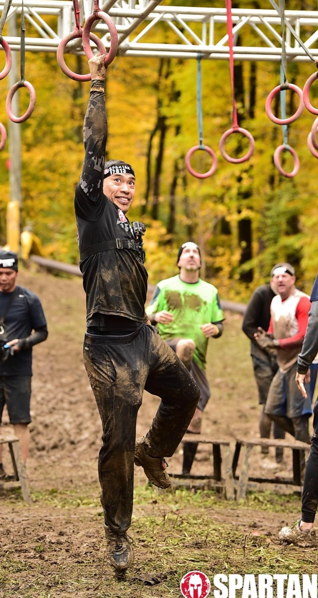
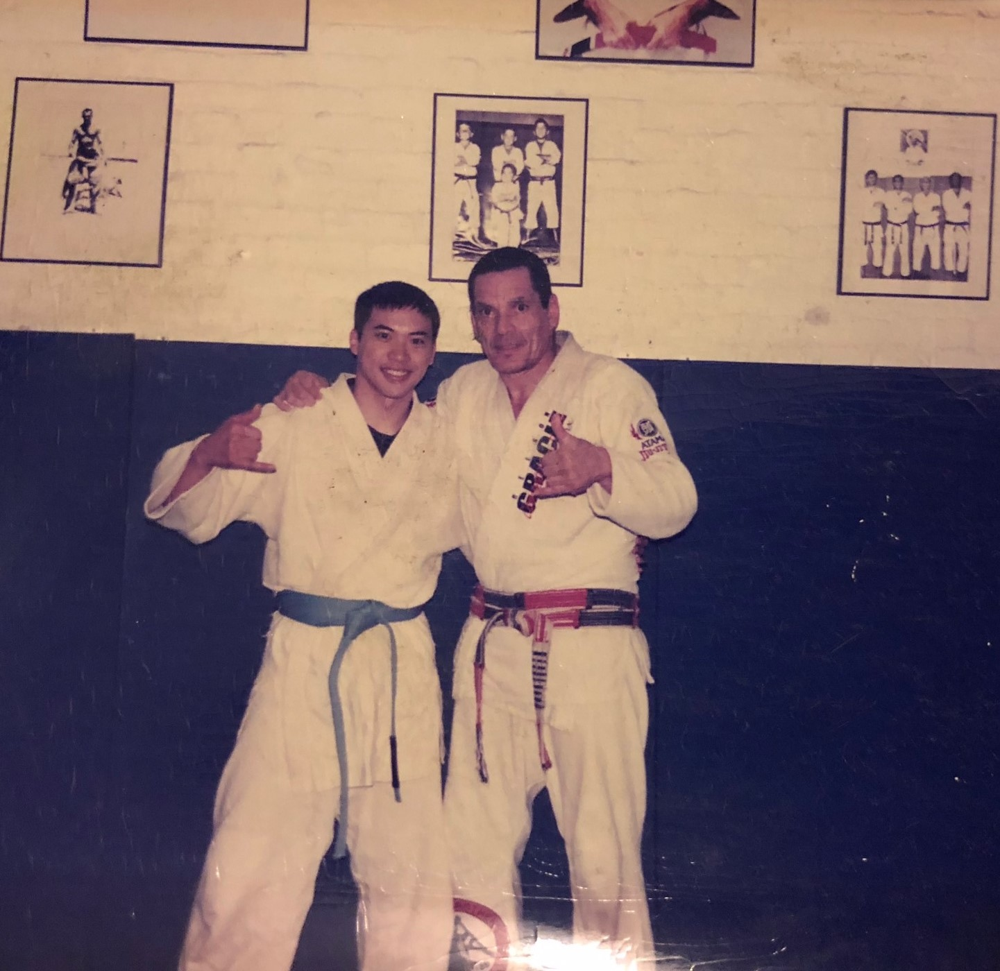

List of Hobbies
- Spartan Racer: Started in 2012, ran and finished several races each year.
- Fitness: Started when I was 12 years old with a set of free weights at home.
- Guitarist: Started in 2019, practicing with two acoustic guitars, two electric guitars, one electric bass guitar. Learning from Yousician, Rocksmith remastered, etc.
- Violinist: Started in 1986 during middle school and stopped playing in 1991 after high school. Now I still dabble with it on occation.
- Clash of clans gamer: Played since 2018
- Martial Arts: Practice MMA, Juijitsu, kickboxing, and several weapons(Knife, katana, butterfly knife, sticks, bo staff)
